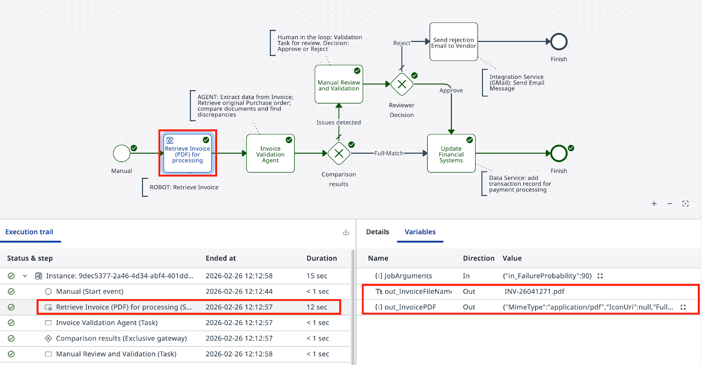

로봇으로 작업 자동화하기¶
이번 레슨의 계획입니다:
-
Studio Web에서 Maestro 에이전틱 프로세스를 만들고 BPMN 다이어그램 가져오기
-
RPA 로봇 작업을 RetrieveInvoiceDocument 프로세스에 연결하기
-
디버그 세션을 실행해 로봇 출력 확인하기
-
프로세스 입력과 출력이 동작하는 방식 배우기
목표¶
Maestro Agentic Process를 만들고, BPMN 다이어그램을 가져온 다음, 첫 번째 작업을 RetrieveInvoiceDocument RPA 프로세스에 연결합니다. 이 로봇은 인보이스 PDF를 가져오는 과정을 시뮬레이션하고, Storage Bucket에 저장된 파일 이름을 출력합니다. 다음 단계의 에이전트가 IXP를 사용해 그 PDF에서 구조화된 데이터를 추출합니다.
로봇 프로세스 소개¶
이 시뮬레이션 시나리오에서 회사는 하루에 수백 건의 인보이스를 처리합니다. 데이터는 ERP와 Accounts Payable(외상매입) 시스템에 저장되어 있는데, 이런 시스템에는 API나 직접적인 데이터베이스 접근이 없는 경우가 많습니다. UI 상호작용을 이용한 RPA 자동화가 그 데이터를 추출할 유일한 방법일 때가 많고, 바로 여기서 UiPath가 빛을 발합니다.
처리를 기다리는 인보이스 큐가 있고, 자동화가 다음 건을 집어 올 수 있게 해 주는 외부 트랜잭션 처리 메커니즘이 있습니다. 로봇은 인보이스를 가져와 PDF에서 데이터를 추출한 뒤, 공급업체에 보냈던 원본 구매 주문(PO)을 찾아서 가져옵니다. 그리고 두 문서의 상세 정보를 에이전트가 처리할 수 있도록 JSON 형식으로 출력합니다.
RetrieveInvoiceDocument 프로세스는 이 수집 과정을 시뮬레이션하고, 샘플 인보이스를 PDF 파일로 출력하면서 Orchestrator Storage Bucket 안의 파일 위치도 함께 알려 줍니다. 이 프로세스는 Orchestrator의 2-Way Matching IXP 폴더에 이미 구성되어 있으므로 직접 작성할 필요는 없습니다.
Studio Web에서 구성하기 전에 먼저 익숙해지세요. Orchestrator에서 2-Way Matching IXP 폴더를 열고 한 번 실행해 보면서 입력과 출력을 살펴보세요.
단계¶
1. Agentic Process 만들기¶
Studio Web에서 올바른 테넌트(AgenticPractice)에서 작업 중인지 확인한 뒤, Create New를 클릭하고 Agentic Process를 선택합니다. 인보이스와 PO 매칭을 수행할 에이전틱 오케스트레이션 워크플로를 위한 새 프로젝트가 만들어집니다:

이제 BPMN 다이어그램을 가져옵니다.
Project Explorer를 열고 Agentic Process를 마우스 오른쪽 버튼으로 클릭한 다음 Import BPMN을 선택합니다.
이전 단계에서 내보낸 .bpmn 파일을 선택하거나 이 샘플 BPMN 파일을 사용하세요. 다이어그램이 프로젝트에 추가됩니다.


프로젝트를 정돈된 상태로 유지하는 기술은 습관에 뿌리를 두고 있으며, 습관은 꾸준한 연습으로 길러집니다.
그러니 좋은 습관을 다지는 것을 잊지 말고 프로젝트를 정리하세요:
-
자동으로 생성된 빈 프로세스("Process.bpmn") 삭제하기
-
솔루션과 프로세스의 이름을 2-Way Matching Solution과 2-Way Matching Process로 바꾸기
정적인 BPMN 도구와 달리 Maestro는 다이어그램을 모델링할 수 있게 해 줍니다. 즉, 연결과 결정을 따라가며 실제로 실행할 수 있다는 뜻입니다.
왼쪽 상단의 "Debug" 버튼을 클릭해 실행해 보고, 왜 그런 경로로 흘러갔는지 이해해 보세요. 다음과 같은 모습이어야 합니다:

2. 로봇 작업 구성하기¶
이 시나리오에서 회사는 사무용품부터 컴퓨터 장비까지 하루에 수백 건의 인보이스를 처리합니다. 데이터는 ERP와 Accounts Payable 또는 청구 시스템에 저장되어 있는데, 아쉽게도 API나 데이터베이스 접근이 늘 제공되는 것은 아닙니다. 그래서 UI 상호작용을 이용한 RPA 자동화가 그 데이터를 추출할 유일한 방법입니다.
처리 대기 중인 인보이스 큐가 있고, 다음 인보이스를 기다렸다가 꺼내 올 수 있게 해 주는 외부 트랜잭션 처리 메커니즘이 있다고 가정해 봅시다. 자동화는 인보이스를 가져와 PDF에서 데이터를 추출한 뒤, 공급업체에 처음 보냈던 원본 구매 주문(PO)을 찾아서 가져옵니다. 그리고 두 문서의 상세 정보를 에이전틱 자동화가 처리할 수 있도록 JSON 형식으로 출력합니다.

"RetrieveInvoiceDocument"라는 RPA 프로세스가 데이터 수집을 시뮬레이션하고 샘플 인보이스를 PDF 파일로 출력합니다. Storage Bucket 안의 파일 이름도 함께 알려 줍니다.
RetrieveInvoiceDocument 자동화에서 받을 수 있는 샘플 인보이스 문서입니다. 꽤 평범한 모습입니다.

이 프로세스는 Orchestrator의 2-Way Matching IXP 폴더에 이미 구성되어 있습니다. 한 번 실행해 보면서 입력과 출력을 살펴보고 익숙해지세요:

프로세스에 필요한 것이 모두 갖춰졌는지 확인했다면, Studio Web으로 돌아가 작업을 업데이트하세요:
- 작업을 클릭해 속성 패널을 엽니다.
- 액션 유형으로 Start and wait for RPA workflow를 선택합니다.

작업 속성에서 2-Way Matching IXP 폴더의 RetrieveInvoiceDocument를 검색해 선택합니다.

Maestro가 이 RPA 자동화의 입력과 출력을 곧바로 불러옵니다.
- in_FailureProbability 값을 설정하는 것을 잊지 마세요. 인보이스가 PO와 일치하지 않을 확률(퍼센트)입니다. 90으로 설정하면 테스트하는 동안 검증 경로를 자주 지나가 볼 수 있어 좋습니다. 최종 버전을 게시하기 전까지 언제든 바꿀 수 있습니다.

3. 프로세스 테스트하기¶
이제 Studio Web에서 "Debug" 버튼을 클릭해 Maestro 오케스트레이션 프로세스를 실행해 보세요. 프로비저닝과 실행을 지켜본 다음, 작업이 올바른 출력을 생성하는지 확인합니다. 이 단계에서는 입력/출력 매개변수 구성을 걱정할 필요가 없습니다. 이후 단계를 위한 변수가 자동으로 생성됩니다.

실행 상세 정보를 살펴보세요. 출력에서 파일 이름이 보인다면 이 레슨을 완료한 것이고, 다음 레슨으로 넘어갈 시간입니다.
PDF 파일 구조를 살펴보세요
2-Way Matching IXP 폴더에 있는 Storage Bucket InvoicesStorage에서 파일 이름으로 PDF 파일을 찾을 수 있습니다.